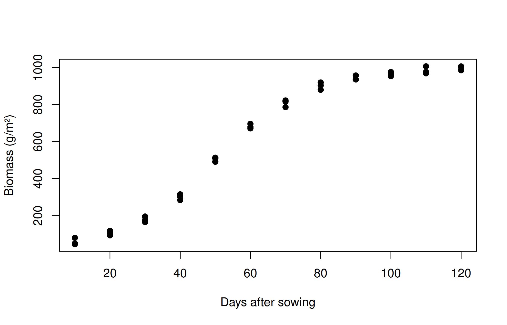
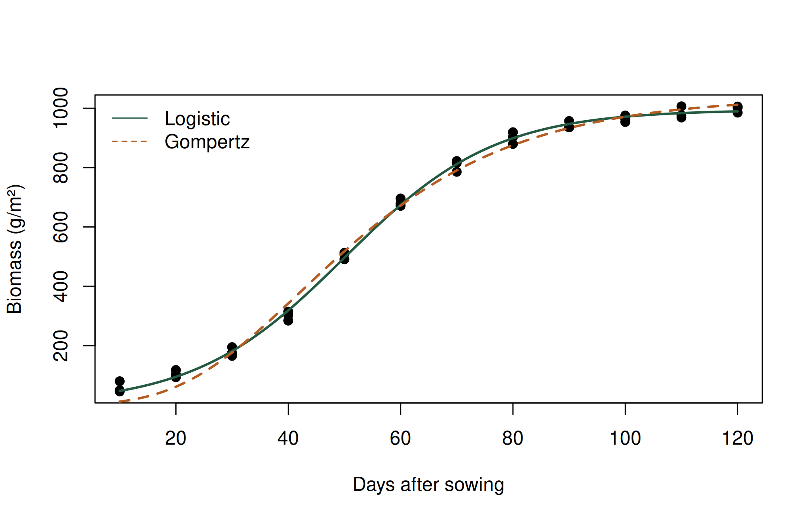
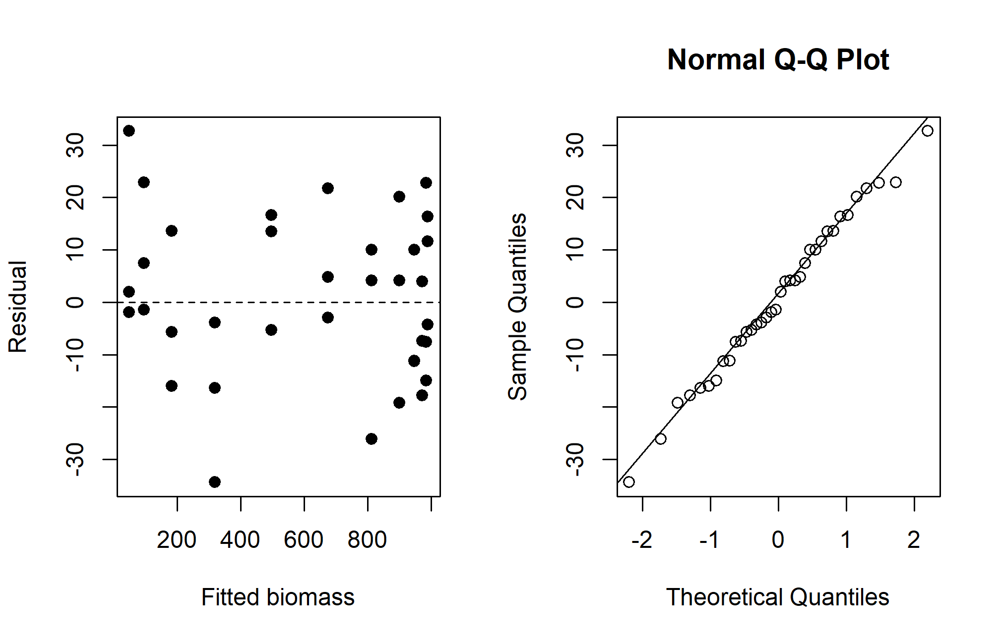
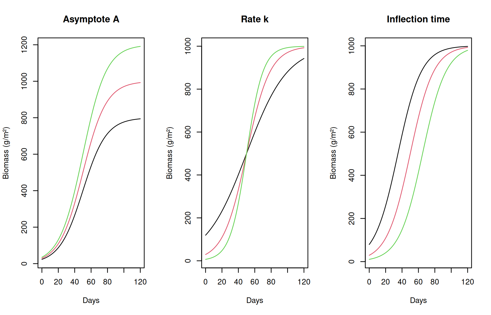
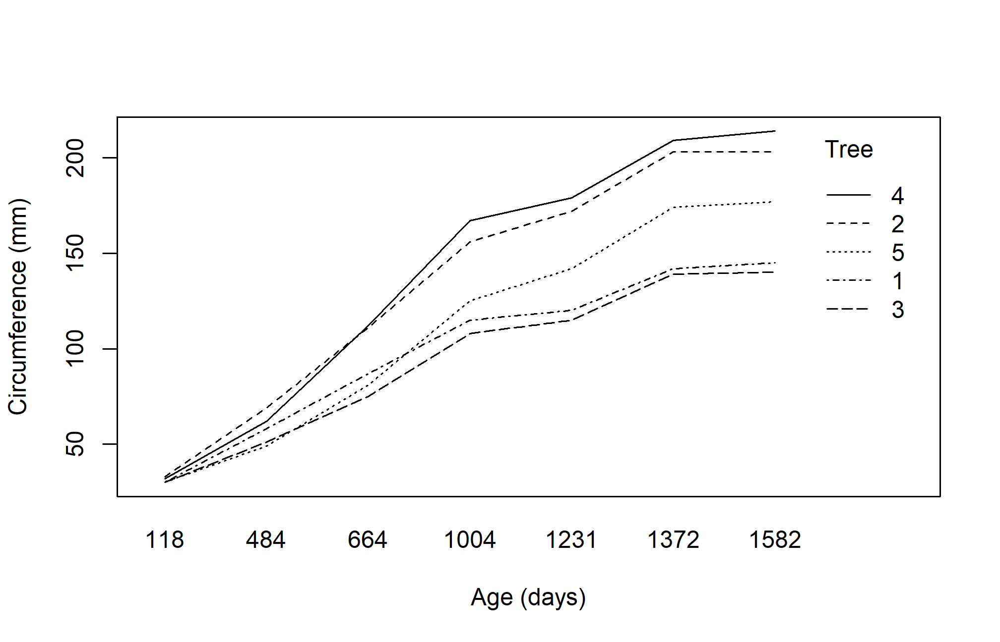

growth <- read.csv("data/growth.csv")
plot(biomass_g_m2 ~ day, growth, pch = 19,
xlab = "Days after sowing", ylab = "Biomass (g/m²)")
Interpret logistic and Gompertz growth parameters, fit nonlinear models, assess residuals and parameter plausibility, and recognize the limits of extrapolation and repeated measurements.
During establishment a crop may accumulate little biomass; rapid growth follows, then growth slows as resources become limiting or maturity approaches. A straight line cannot represent all three phases. A sigmoid model describes an S-shaped trajectory using parameters that have biological interpretations.
Let \(W(t)\) denote biomass at time \(t\). One parameterization of the logistic curve is
\[W(t)=\frac{A}{1+\exp\{-k(t-t_i)\}}, \qquad A>0,\ k>0.\]
\(A\) is the asymptotic biomass, \(k\) controls the rate of approach, and \(t_i\) is the time of inflection. At \(t_i\), biomass is \(A/2\) and absolute growth rate is maximal at \(Ak/4\). The Gompertz form used here is
\[W(t)=A\exp\{-\exp[-k(t-t_i)]\}.\]
Its inflection occurs at biomass \(A/e\), and its maximum absolute growth rate is \(Ak/e\). Both have an upper asymptote, but the logistic is symmetric around its inflection whereas the Gompertz is asymmetric. Parameter meanings depend on the chosen formula; a package using other symbols may use a different parameterization.
growth.csv contains simulated biomass in g/m² at 12 sampling times, with three independently harvested quadrats at each time. The independence assumption is part of this teaching design. Repeated measurements on the same plants require a model accounting for within-plant dependence, beyond ordinary independent-error nls().
growth <- read.csv("data/growth.csv")
plot(biomass_g_m2 ~ day, growth, pch = 19,
xlab = "Days after sowing", ylab = "Biomass (g/m²)")
Before fitting, ask whether the observations span early growth, the inflection region, and a plateau. Without late observations the asymptote can be poorly identified even when the fitted curve looks convincing.
Nonlinear least squares chooses parameters that minimize the sum of squared residuals. Starting values guide its numerical search; they are not prior evidence. Here a plateau near 1,000 g/m², an inflection near day 50, and a positive growth rate are reasonable visual starting points.
logistic <- nls(biomass_g_m2 ~ A / (1 + exp(-k * (day - ti))),
data = growth, start = list(A = 1000, k = .07, ti = 50),
algorithm = "port", lower = c(A = 0, k = .0001, ti = -Inf))
gompertz <- nls(biomass_g_m2 ~ A * exp(-exp(-k * (day - ti))),
data = growth, start = list(A = 1000, k = .06, ti = 45),
algorithm = "port", lower = c(A = 0, k = .0001, ti = -Inf))
summary(logistic)
Formula: biomass_g_m2 ~ A/(1 + exp(-k * (day - ti)))
Parameters:
Estimate Std. Error t value Pr(>|t|)
A 9.947e+02 5.477e+00 181.63 <2e-16 ***
k 7.477e-02 1.602e-03 46.68 <2e-16 ***
ti 5.006e+01 3.382e-01 148.03 <2e-16 ***
---
Signif. codes: 0 '***' 0.001 '**' 0.01 '*' 0.05 '.' 0.1 ' ' 1
Residual standard error: 15.71 on 33 degrees of freedom
Algorithm "port", convergence message: relative convergence (4)coef(gompertz) A k ti
1039.1311376 0.0467095 42.2440535 AIC(logistic, gompertz) df AIC
logistic 4 305.3417
gompertz 4 350.1883grid <- data.frame(day = seq(min(growth$day), max(growth$day), length.out = 200))
plot(biomass_g_m2 ~ day, growth, pch = 19,
xlab = "Days after sowing", ylab = "Biomass (g/m²)")
lines(grid$day, predict(logistic, grid), col = "#245A42", lwd = 2)
lines(grid$day, predict(gompertz, grid), col = "#B45C21", lwd = 2, lty = 2)
legend("topleft", c("Logistic", "Gompertz"),
col = c("#245A42", "#B45C21"), lty = c(1, 2), bty = "n")
Compare AIC only for fits to the same response observations under comparable error assumptions. Lower AIC suggests a better balance of fit and complexity among the candidates; it does not prove biological truth. Do not compare raw-response and log-response AIC values without accounting for the transformed likelihood.
old <- par(mfrow = c(1, 2))
plot(fitted(logistic), residuals(logistic), pch = 19,
xlab = "Fitted biomass", ylab = "Residual")
abline(h = 0, lty = 2)
qqnorm(residuals(logistic)); qqline(residuals(logistic))
par(old)
pars <- coef(logistic)
c(asymptote_g_m2 = pars[["A"]], inflection_day = pars[["ti"]],
max_rate_g_m2_day = pars[["A"]] * pars[["k"]] / 4) asymptote_g_m2 inflection_day max_rate_g_m2_day
994.74260 50.05894 18.59469 A curved residual pattern suggests a missing feature of the growth curve. Increasing residual spread suggests changing error variance. Check convergence, sensible parameter values, and sensitivity to starting values. Nonconvergence may reflect poor starting values, inadequate data coverage, or an unsuitable model; increasing iteration limits alone is not a scientific solution.
The curve predicts a mean trajectory, not a guaranteed individual observation. predict.nls() does not automatically provide valid confidence or prediction intervals from an interval argument as predict.lm() does. Uncertainty may require an appropriate bootstrap or another justified method. Avoid presenting an unqualified long-term biomass forecast from a short growth experiment.
It is easy to read a formula and still be unsure how its parameters affect the graph. Let us change one parameter at a time while keeping the others fixed. Begin with a logistic curve having an asymptote of 1,000 g/m², a rate parameter of 0.07 per day, and an inflection time of day 50.
logistic_curve <- function(t, A = 1000, k = .07, ti = 50) {
A / (1 + exp(-k * (t - ti)))
}
t <- seq(0, 120, length.out = 200)
old <- par(mfrow = c(1, 3))
matplot(t, cbind(logistic_curve(t, A = 800), logistic_curve(t),
logistic_curve(t, A = 1200)), type = "l", lty = 1,
xlab = "Days", ylab = "Biomass (g/m²)", main = "Asymptote A")
matplot(t, cbind(logistic_curve(t, k = .04), logistic_curve(t),
logistic_curve(t, k = .10)), type = "l", lty = 1,
xlab = "Days", ylab = "Biomass (g/m²)", main = "Rate k")
matplot(t, cbind(logistic_curve(t, ti = 35), logistic_curve(t),
logistic_curve(t, ti = 65)), type = "l", lty = 1,
xlab = "Days", ylab = "Biomass (g/m²)", main = "Inflection time")
par(old)Increasing A raises the upper plateau. Increasing k makes the transition from early growth to the plateau more rapid. Increasing ti moves the rapid-growth phase later in time. These changes can compensate for one another over a short observed interval, which explains why parameters may be unstable when observations do not cover the whole trajectory.
The logistic scale parameter used by R’s SSlogis() is another way of expressing the same curve. In its usual form, scal is 1/k. Thus a larger scal corresponds to a slower transition, whereas a larger k corresponds to a faster transition. Comparing printed parameter names without checking formulas can therefore reverse an interpretation.
Absolute growth rate describes an increase in biomass per unit time. If biomass is in g/m² and time in days, its unit is g/m²/day. For the logistic curve, differentiating with respect to time gives
\[\frac{dW}{dt}=kW\left(1-\frac{W}{A}\right).\]
At small W, the factor 1 - W/A is close to one. As biomass approaches the asymptote, that factor approaches zero and absolute growth slows. Relative growth rate divides absolute growth by current biomass:
\[\frac{1}{W}\frac{dW}{dt}=k\left(1-\frac{W}{A}\right).\]
Its unit is per day. Relative growth can decrease even while the absolute amount accumulated each day is increasing. A small seedling adding 1 g to 2 g has a larger proportional increase than a large plant adding 10 g to 200 g, although the large plant adds more biomass in absolute terms.
predicted_w <- logistic_curve(t)
absolute_rate <- .07 * predicted_w * (1 - predicted_w / 1000)
relative_rate <- absolute_rate / predicted_w
head(data.frame(day = t, biomass = predicted_w,
absolute_rate, relative_rate)) day biomass absolute_rate relative_rate
1 0.0000000 29.31223 1.991712 0.06794814
2 0.6030151 30.53742 2.072342 0.06786238
3 1.2060302 31.81215 2.156009 0.06777315
4 1.8090452 33.13827 2.242808 0.06768032
5 2.4120603 34.51769 2.332835 0.06758376
6 3.0150754 35.95240 2.426188 0.06748333For sampled growth data, a finite difference (W2 - W1)/(t2 - t1) estimates an average absolute rate over an interval. It is not an exact instantaneous derivative. With destructive sampling, the two means come from different quadrats and both contribute uncertainty. Avoid interpreting differences between noisy individual observations as exact physiological rates.
Ordinary nonlinear least squares assumes that residual variation is additive on the response scale. A large plant and a small plant are then assumed to have the same residual variance. If variability grows in proportion to mean biomass, a logarithmic response or an explicitly modelled variance structure may be more appropriate. These choices change the statistical question.
Taking logarithms is possible only for positive values. It also changes how large discrepancies are weighted: a difference of 20 g is relatively substantial near 40 g and relatively small near 1,000 g. Do not fit on a transformed scale and then describe every back-transformed prediction as an unbiased arithmetic mean without considering the transformation.
When comparing curves, examine their behaviour over the measured interval, residual plots, parameter plausibility, and uncertainty. A nearly flat late-growth phase can support estimation of A; early observations alone cannot guarantee it. An agronomically unreasonable asymptote is a reason to reconsider coverage and model structure even if the numerical optimizer converged.
R’s Orange dataset records circumference repeatedly on five orange trees. It is useful for recognizing the difference between longitudinal observations and independent destructive samples.
data("Orange", package = "datasets")
head(Orange) Tree age circumference
1 1 118 30
2 1 484 58
3 1 664 87
4 1 1004 115
5 1 1231 120
6 1 1372 142with(Orange, interaction.plot(age, Tree, circumference,
xlab = "Age (days)", ylab = "Circumference (mm)"))
Read ?Orange before analysis. Fitting each tree separately can illustrate curve shapes; a population analysis should account for repeated measurements and differences among trees.
Chapter review. A biologically interpretable curve is useful only when the sampling design, observed growth phases, numerical fit, and residual assumptions support it.
Compare logistic growth parameters
Edit the code, then select Run R. The first run downloads R into your browser and may take a little time. Copy code also lets you use this example in RStudio.
time <- seq(0, 100, length.out = 101)
K <- 100
r <- 0.08
midpoint <- 50
logistic <- K / (1 + exp(-r * (time - midpoint)))
plot(time, logistic, type = "l", lwd = 3, col = "#278879",
xlab = "Time (days)", ylab = "Simulated biomass (g)",
main = "Logistic growth")
abline(v = midpoint, h = K / 2, lty = 2, col = "#ba8126")
c(asymptote = K, inflection_day = midpoint)Investigate. Double r, then change midpoint to 40. Distinguish an increase in steepness from an earlier inflection. K, r, and midpoint are illustrative parameters, not fitted estimates.
Record the input you changed, the output you obtained, and your interpretation. These live examples use base R and work independently. The full chapter examples, including package-based analyses, remain available with copy buttons for RStudio. Browser objects last until this page is reloaded; Reset code restores the editor text. Internet access is needed on first use; long or interactive desktop tasks belong in RStudio.
Pierre-François Verhulst proposed the logistic equation in 1838 to describe population growth, and Benjamin Gompertz published his curve in 1825 to describe human mortality. Both are now standard models of crop and animal growth.
Answers are given at the end of the chapter.
Answers are given at the end of the chapter.
Logistic growth model:
\[ W(t) = \frac{A}{1 + \exp\{-k(t - t_i)\}} \tag{9.1}\]
Gompertz growth model:
\[ W(t) = A\exp\{-\exp[-k(t - t_i)]\} \tag{9.2}\]
Absolute growth rate of the logistic model:
\[ \frac{dW}{dt} = kW\left(1 - \frac{W}{A}\right) \tag{9.3}\]
1. S 2. inflection 3. asymptote 4. half 5. asymmetric 6. nls() 7. size 8. risky